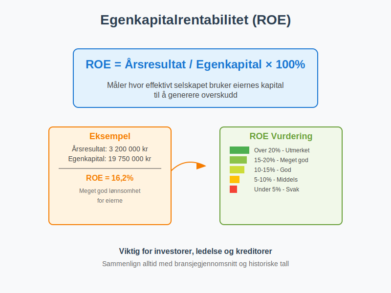
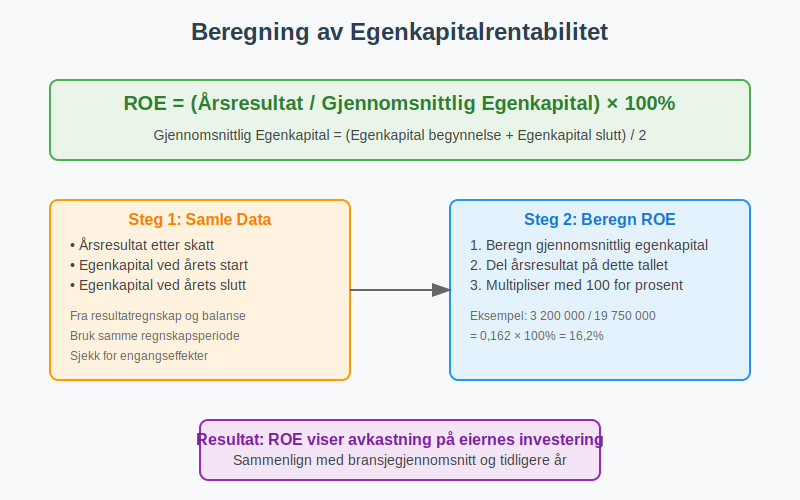
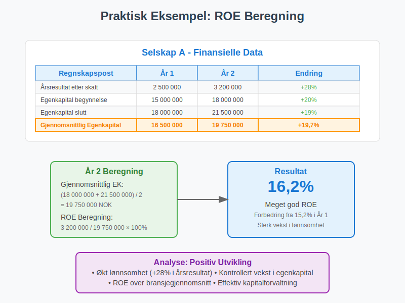
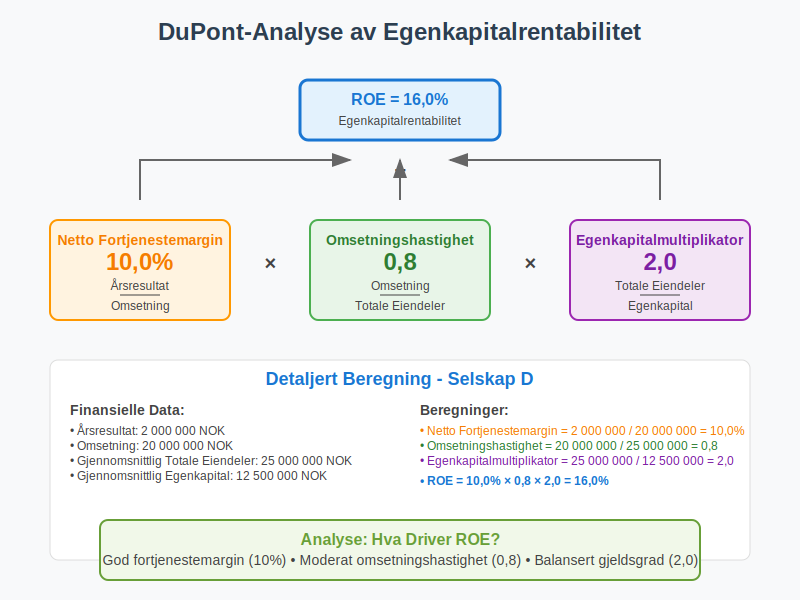
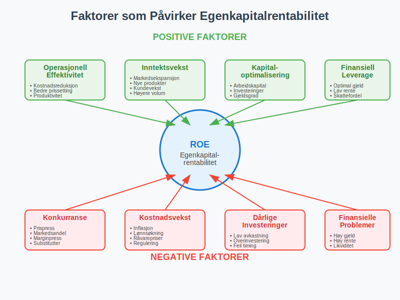
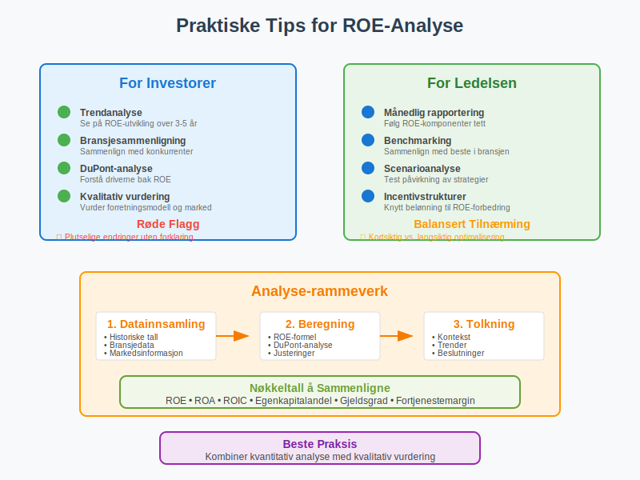

Egenkapitalrentabilitet (ROE - Return on Equity) er et av de viktigste nøkkeltallene for å måle hvor effektivt et selskap bruker eiernes kapital til å generere overskudd. Dette finansielle måltallet viser hvor mye avkastning eierne får på sin investerte egenkapital og er sentralt i finansiell analyse og investeringsbeslutninger.

Definisjon og Grunnleggende Forståelse
Egenkapitalrentabilitet defineres som forholdet mellom et selskaps årsresultat og gjennomsnittlig egenkapital over samme periode. Det uttrykkes vanligvis som en prosentandel og viser hvor mange kroner i overskudd selskapet genererer per krone investert egenkapital.
Grunnleggende Formel
Egenkapitalrentabilitet = (Årsresultat / Gjennomsnittlig Egenkapital) × 100%
Hvor:
- Årsresultat = Nettoresultat etter skatt fra resultatregnskapet
- Gjennomsnittlig Egenkapital = (Egenkapital ved årets begynnelse + Egenkapital ved årets slutt) / 2

Hvorfor er Egenkapitalrentabilitet Viktig?
Egenkapitalrentabilitet er viktig av flere grunner:
For Investorer
- Sammenligning av lønnsomhet mellom ulike selskaper
- Vurdering av ledelsens effektivitet i kapitalforvaltning
- Beslutningsgrunnlag for investeringer og porteføljevalg
- Benchmarking mot bransjegjennomsnitt og konkurrenter
- Grunnlag for verdsettelse i inntjeningsbaserte verdsettelsesmetoder
For Ledelsen
- Måling av operasjonell effektivitet
- Evaluering av strategiske beslutninger
- Incentivstruktur for ledelse og ansatte
- Kommunikasjon med aksjonærer og interessenter
For Kreditorer
- Vurdering av selskapets evne til å generere avkastning
- Risikoanalyse for utlån og kredittfasiliteter
- Overvåking av finansiell helse over tid
Beregning av Egenkapitalrentabilitet
La oss se på praktiske eksempler på hvordan egenkapitalrentabilitet beregnes:
Eksempel 1: Grunnleggende Beregning
Selskap A - Finansielle Data:
| Regnskapspost | År 1 | År 2 |
|---|---|---|
| Årsresultat etter skatt | 2 500 000 | 3 200 000 |
| Egenkapital ved årets begynnelse | 15 000 000 | 18 000 000 |
| Egenkapital ved årets slutt | 18 000 000 | 21 500 000 |
Beregning for År 2:
- Gjennomsnittlig egenkapital = (18 000 000 + 21 500 000) / 2 = 19 750 000 NOK
- Egenkapitalrentabilitet = (3 200 000 / 19 750 000) × 100% = 16,2%

Eksempel 2: Sammenligning av Selskaper
| Selskap | Årsresultat | Gjennomsnittlig Egenkapital | ROE |
|---|---|---|---|
| Selskap A | 3 200 000 | 19 750 000 | 16,2% |
| Selskap B | 1 800 000 | 12 000 000 | 15,0% |
| Selskap C | 4 500 000 | 35 000 000 | 12,9% |
Selv om Selskap C har høyest absolutt overskudd, har Selskap A best egenkapitalrentabilitet.
DuPont-Analysen: Dypere Forståelse av ROE
DuPont-analysen bryter ned egenkapitalrentabilitet i tre komponenter for å gi dypere innsikt:
DuPont-Formelen
ROE = Netto Fortjenestemargin × Omsetningshastighet × Egenkapitalmultiplikator
Hvor:
- Netto Fortjenestemargin = Årsresultat / Omsetning
- Omsetningshastighet = Omsetning / Gjennomsnittlig Totale Eiendeler
- Egenkapitalmultiplikator = Gjennomsnittlig Totale Eiendeler / Gjennomsnittlig Egenkapital

Praktisk DuPont-Eksempel
Selskap D - Detaljert Analyse:
| Komponent | Beregning | Resultat |
|---|---|---|
| Årsresultat | 2 000 000 | |
| Omsetning | 20 000 000 | |
| Gjennomsnittlig Totale Eiendeler | 25 000 000 | |
| Gjennomsnittlig Egenkapital | 12 500 000 | |
| Netto Fortjenestemargin | 2 000 000 / 20 000 000 | 10,0% |
| Omsetningshastighet | 20 000 000 / 25 000 000 | 0,8 |
| Egenkapitalmultiplikator | 25 000 000 / 12 500 000 | 2,0 |
| ROE | 10,0% × 0,8 × 2,0 | 16,0% |
Tolkning og Vurdering av Egenkapitalrentabilitet
Generelle Retningslinjer
| ROE-Nivå | Vurdering | Betydning |
|---|---|---|
| Over 20% | Utmerket | Meget høy lønnsomhet og effektivitet |
| 15-20% | Meget god | Sterk finansiell prestasjon |
| 10-15% | God | Akseptabel avkastning for eierne |
| 5-10% | Middels | Moderat lønnsomhet, kan forbedres |
| Under 5% | Svak | Lav avkastning, bekymringsfullt |
Bransjeforskjeller
Egenkapitalrentabilitet varierer betydelig mellom bransjer:
Høy ROE-Bransjer
- Teknologi og programvare: 15-25%
- Finansielle tjenester: 10-20%
- Konsumvarer: 12-18%
- Helsevesen og farmasøytisk: 15-25%
Moderat ROE-Bransjer
- Detaljhandel: 8-15%
- Industri og produksjon: 8-12%
- Telekommunikasjon: 6-12%
Lav ROE-Bransjer
- Forsyningsselskaper: 5-10%
- Eiendom: 4-8%
- Råvarer og gruvedrift: 5-12%
Faktorer som Påvirker Egenkapitalrentabilitet
Positive Faktorer
Operasjonelle Forbedringer
- Økt fortjenestemargin gjennom kostnadsreduksjoner
- Høyere omsetningshastighet gjennom effektiv ressursbruk
- Bedre prissetting og produktmiks
- Operasjonell effektivitet og produktivitetsforbedringer
Finansielle Strategier
- Optimal kapitalstruktur med balansert gjeldsgrad
- Effektiv arbeidskapitalstyring
- Strategiske investeringer med høy avkastning
- Utbyttepolitikk som balanserer vekst og utdelinger
Negative Faktorer
Operasjonelle Utfordringer
- Fallende fortjenestemarginer på grunn av konkurranse
- Lav kapitalomsetning og ineffektiv ressursbruk
- Høye driftskostnader og operasjonelle ineffektiviteter
- Markedssvikt og redusert etterspørsel
Finansielle Problemer
- Overkapitalisering med for mye ledig kapital
- Dårlige investeringsbeslutninger med lav avkastning
- Suboptimal kapitalstruktur
- Høye finanskostnader

Begrensninger ved Egenkapitalrentabilitet
Regnskapsmessige Begrensninger
Historiske Kostnader
- Bokført verdi vs. markedsverdi av eiendeler
- Avskrivningsmetoder påvirker egenkapitalens størrelse
- Inflasjonsjusteringer ikke reflektert i regnskapet
Regnskapsprinsipper
- Forskjeller i regnskapsstandarder (NGAAP vs. IFRS)
- Skjønnsmessige vurderinger av eiendeler og gjeld
- Timing av inntektsføring og kostnadsføring
Analytiske Begrensninger
Kortsiktig Fokus
- Kvartalsvise svingninger kan gi misvisende bilde
- Engangseffekter påvirker sammenlignbarheten
- Sesongvariasjoner i enkelte bransjer
Sammenlignbarhet
- Bransjeforskjeller gjør direkte sammenligning vanskelig
- Selskapsstørrelse påvirker ROE-nivåer
- Geografiske forskjeller i markeder og regulering
Forbedring av Egenkapitalrentabilitet
Strategiske Tiltak
Øke Lønnsomheten
- Kostnadsoptimalisering og effektivitetsforbedringer
- Prissettingsstrategier for å øke marginer
- Produktutvikling og innovasjon
- Markedsekspansjon til nye segmenter
Optimalisere Kapitalbruken
- Arbeidskapitalstyring for å frigjøre kapital
- Investeringsevaluering med fokus på avkastning
- Porteføljeoptimalisering ved salg av dårlige eiendeler
- Kapitalallokering til mest lønnsomme områder
Finansielle Strategier
Kapitalstruktur
- Optimal gjeldsgrad for å utnytte finansiell leverage
- Refinansiering til lavere rentekostnader
- Hybride finansieringsinstrumenter
- Timing av kapitalinnhenting
Utbyttepolitikk
- Balanse mellom vekstinvesteringer og utbytter
- Tilbakekjøp av aksjer for å redusere egenkapitalbasen
- Spesialutbytter ved overskuddslikviditet
Egenkapitalrentabilitet vs. Andre Nøkkeltall
Egenkapitalrentabilitet er ett av mange viktige nøkkeltall som brukes til å analysere en bedrifts finansielle prestasjon. For en helhetlig forståelse av virksomhetens økonomiske helse bør ROE vurderes sammen med andre finansielle måleinstrumenter.
Sammenligning med Relaterte Nøkkeltall
| Nøkkeltall | Formel | Fokus | Bruksområde |
|---|---|---|---|
| ROE | Årsresultat / Egenkapital | Eiernes avkastning | Investoranalyse |
| ROA | Årsresultat / Totale Eiendeler | Eiendelseffektivitet | Operasjonell analyse |
| ROCE | EBIT / Sysselsatt Kapital | Total kapitaleffektivitet | Kapitalanalyse |
| ROIC | NOPAT / Investert Kapital | Kapitaleffektivitet | Strategisk analyse |
| ROI | Gevinst / Investering | Investeringsavkastning | Prosjektevaluering |
Når Bruke Hvilket Nøkkeltall
ROE er Best for:
- Aksjonærperspektiv og investeringsbeslutninger
- Sammenligning av selskaper i samme bransje
- Evaluering av ledelsens effektivitet
- Langsiktig verdiskapingsvurdering
Andre Nøkkeltall er Bedre for:
- ROA: Sammenligning på tvers av bransjer med ulik kapitalstruktur
- ROCE: Måling av avkastning på total sysselsatt kapital inkludert gjeld
- ROIC: Vurdering av operasjonell effektivitet uavhengig av finansiering
- ROI: Evaluering av spesifikke investeringsprosjekter
Praktiske Tips for Analyse
For Investorer
Grundig Analyse
- Trendanalyse over flere år for å identifisere mønstre
- Bransjesammenligning for å vurdere relativ prestasjon
- DuPont-analyse for å forstå driverne bak ROE
- Kvalitativ vurdering av forretningsmodell og konkurranseposisjon
Røde Flagg
- Plutselige endringer i ROE uten klar forklaring
- Konsistent fallende trend over flere år
- ROE drevet kun av høy gjeldsgrad (finansiell leverage)
- Engangseffekter som kunstig øker ROE
For Ledelsen
Kontinuerlig Overvåking
- Månedlig rapportering av ROE-komponenter
- Benchmarking mot konkurrenter og bransjegjennomsnitt
- KPI-systemer for systematisk prestasjonsmåling
- Scenarioanalyse for å forstå påvirkning av strategiske beslutninger
- Incentivstrukturer knyttet til ROE-forbedring
Balansert Tilnærming
- Kortsiktig vs. langsiktig ROE-optimalisering
- Risikojustert avkastningsvurdering
- Bærekraftige forbedringstiltak
- Interessentbalanse mellom aksjonærer og andre stakeholders

Egenkapitalrentabilitet i Ulike Selskapsformer
Aksjeselskaper (AS)
For aksjeselskaper er ROE spesielt relevant siden:
- Aksjonærer fokuserer på avkastning på investert kapital
- Børsnoterte selskaper rapporterer ROE kvartalsvis
- Sammenligning mellom selskaper er enklere
- Markedsverdier påvirkes av ROE-forventninger og brukes i inntjeningsbasert verdivurdering
Allmennaksjeselskaper (ASA)
ASA-selskaper har ytterligere krav:
- Offentlig rapportering av ROE i årsrapporter
- Analytikerfølging og ROE-prognoser
- Regulatoriske krav til finansiell rapportering
- Investor relations fokuserer på ROE-utvikling
Andre Selskapsformer
Ansvarlige Selskaper (ANS/DA)
- ROE mindre relevant siden personlig ansvar
- Fokus på kontantstrøm og likviditet
- Skattemessige hensyn viktigere
Enkeltpersonforetak (ENK)
- Blanding av privat og bedriftsøkonomi
- ROE-beregning komplisert av private uttak
- Alternative lønnsomhetsmål mer relevante
Internasjonale Perspektiver
Globale Standarder
IFRS vs. Lokale Standarder
- Sammenlignbarhet på tvers av land
- Forskjeller i regnskapsføring påvirker ROE
- Valutaeffekter ved internasjonale sammenligninger
- Kulturelle forskjeller i kapitalforvaltning
Markedsforskjeller
Utviklede Markeder
- Lavere ROE-forventninger (8-12%)
- Stabil og forutsigbar avkastning
- Høy markedseffektivitet
- Regulatorisk stabilitet
Fremvoksende Markeder
- Høyere ROE-forventninger (15-25%)
- Større volatilitet i avkastning
- Vekstmuligheter og markedsutvikling
- Regulatorisk usikkerhet
Fremtidige Trender og Utvikling
Teknologisk Påvirkning
Digitalisering
- Automatisering av ROE-beregninger og analyse
- Sanntidsrapportering av finansielle nøkkeltall
- Prediktive modeller for ROE-prognoser
- Kunstig intelligens i finansiell analyse
Nye Forretningsmodeller
- Plattformøkonomi og nettverkseffekter
- Abonnementsmodeller og tilbakevendende inntekter
- Digitale eiendeler og immaterielle verdier
- Bærekraftige forretningsmodeller
ESG og Bærekraft
Integrert Rapportering
- ESG-faktorer påvirker langsiktig ROE
- Bærekraftsmål og finansiell prestasjon
- Stakeholder-kapitalisme vs. aksjonærverdi
- Regulatoriske krav til bærekraftsrapportering
Konklusjon
Egenkapitalrentabilitet er et fundamentalt nøkkeltall som gir verdifull innsikt i et selskaps evne til å skape verdi for eierne. Ved å forstå hvordan ROE beregnes, tolkes og forbedres, kan både investorer og ledere ta bedre informerte beslutninger.
Viktige Takeaways
- ROE måler hvor effektivt selskapet bruker egenkapital til å generere overskudd
- DuPont-analyse gir dypere forståelse av ROE-driverne
- Bransjesammenligning er essensielt for korrekt tolkning
- Trendanalyse over tid er viktigere enn enkeltstående målinger
- Balansert tilnærming mellom kortsiktig og langsiktig ROE-optimalisering
Egenkapitalrentabilitet bør alltid vurderes i sammenheng med andre finansielle nøkkeltall og kvalitative faktorer for å få et helhetlig bilde av selskapets finansielle helse og fremtidsutsikter. Som et av de mest brukte lønnsomhetsmålene i finansverdenen, er forståelse av ROE essensielt for alle som arbeider med regnskap, finans og investeringer.
ROE er også en sentral komponent i inntjeningsbasert verdivurdering, hvor det brukes i P/E-analyser og andre multiplikatormetoder for å vurdere selskapers markedsverdi.